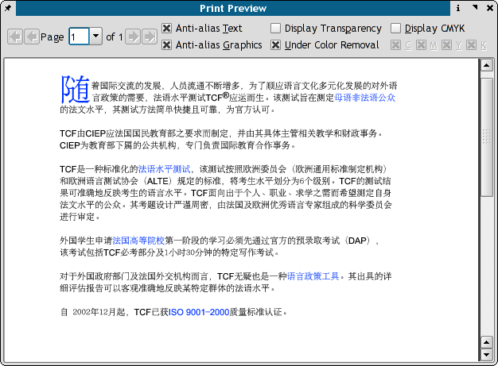

As mentioned in the prior section, one of the challenges of an advanced DTP application like Scribus, is the ability to generate what I refer to as "high-level" PostScript or PDF features. The print previewer in Scribus is quite special, as it does more than just generate a screen dump of your document. Scribus generates its print preview by actually outputting a temporary PS file and then using some of the special "devices" from Ghostscript. Have patience when launching the print preview, Scribus and Ghostscript do a lot of work in the background. Newer GS 8.x versions will have far fewer limits on the kinds of advanced PS which can be displayed. The print previewer also gives you the option to preview the individual inks in CMYK color.
The print previewer can help you to identify images and artwork, which may have difficulty printing directly on your particular printing setup. This often depends on the capabilities of your printing system, along with the types of advanced features included in your documents. The types of features which can be troublesome with some printing setups include gradients, transparency and complex masking to name a few. The print previewer also can help to give you an idea of color shifts which might occur when printing in CMYK mode.
|  |
Most of these options are for advanced CMYK or commercial printing. The first two check boxes are useful for all users.